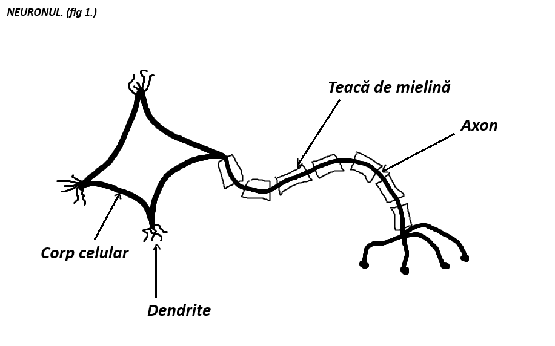

Ce este SN?
Sistemul nervos este o retea complexa de nervi si celule care trimit mesaje de la creier si maduva spinarii la diferite parti ale corpului.
Celulele nervoase (neuronii) + Celulele gliale (nevroglii) alcătuiesc împreună un țesut nervos. Mai multe țesuturi nervoase alcătuiesc un organ nervos. Organele nervoase alcătuiesc SN (sistemul nervos).
Neuronii
Neuronii sunt alcătuiți din:
→ Corp celular
→ Prelungiri

Prelungirile neuronului (figura 1) sunt de două tipuri:
→ Numeroase, scrute. Ele se numesc dendrite
→ Una unică, lungă. Ea se numește axon
Teaca de mielină este o substanță lididică de culoare albă. Ea facilitează transmiterea impulului nervos către creier.
Corpii celulari ai neuronilor dintr-un organ nervos formează substanța nervoasă cenușie.
Prelungirile (axonii) formează substanța nervasă albă.
Un mănunchi de fibre nervoase cu un înveliș comun formează un nerv.
Nevroglii
→ Sintetizează teaca de mielină.♥
→ Susțin și hrănesc neuronii.♥
→ Fagocitează1 neuronii distruși.♥